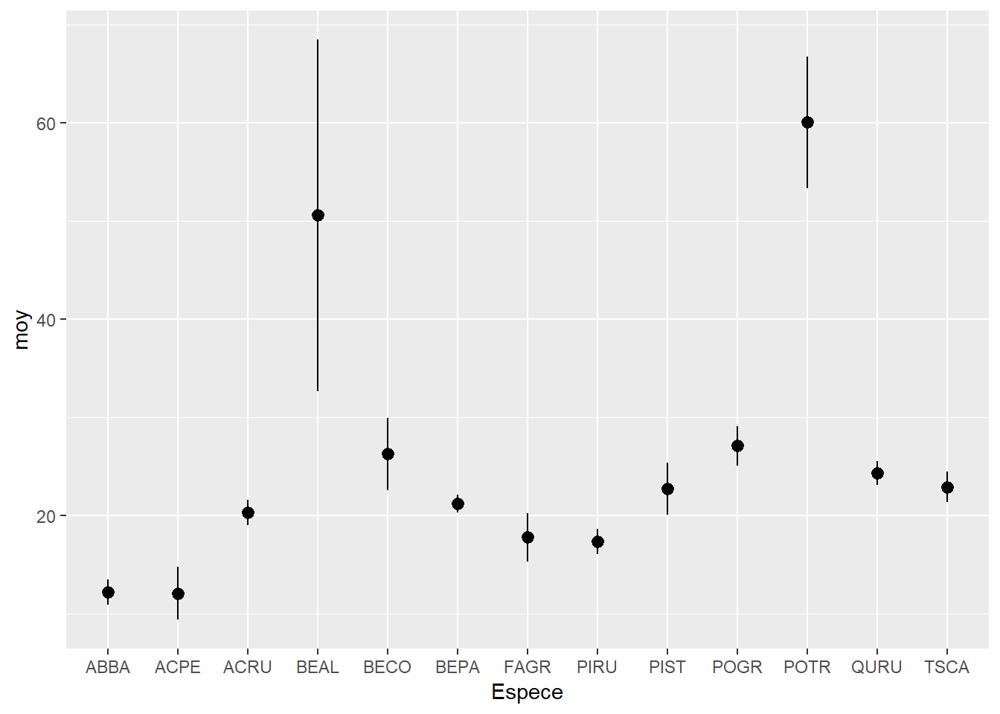
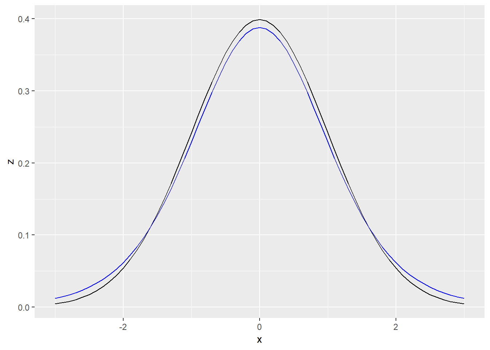
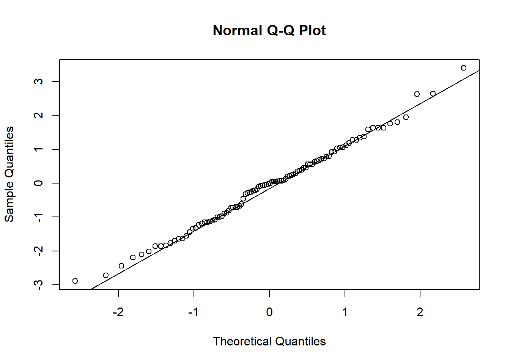

Parameter estimation and sampling methods
September 12, 2018
In this lab, you will apply the concepts seen during the last two classes.
1. Flower measurements of three iris species
For this exercise, we will use Edgar Anderson’s famous iris data set, which contains different measurements taken on 50 flowers of 3 iris species. This data frame is already loaded into R under the name iris.
head(iris)## Sepal.Length Sepal.Width Petal.Length Petal.Width Species
## 1 5.1 3.5 1.4 0.2 setosa
## 2 4.9 3.0 1.4 0.2 setosa
## 3 4.7 3.2 1.3 0.2 setosa
## 4 4.6 3.1 1.5 0.2 setosa
## 5 5.0 3.6 1.4 0.2 setosa
## 6 5.4 3.9 1.7 0.4 setosa- We will first visualize some of the data. Using ggplot2, produce a scatter plot relating the length and width of the sepals (
Sepal.LengthandSepal.Width), differentiating the points of each species by color.
library(ggplot2)
ggplot(iris, aes(x = Sepal.Length, y = Sepal.Width, color = Species)) +
geom_point()
How would you calculate the mean of Sepal.Width and its 95% confidence interval by species?
- What quantities do you need for this calculation?
The mean, standard error (which depends on the standard deviation and sample size) and the probabilities of the \(t\) distribution for \(p\) = 0.025 and \(p\) = 0.975.
- Using the dplyr package, calculate the mean, sample size, standard deviation and standard error of the mean of
Sepal.Widthfor each species (Species). Save the result in a data frameiris_stat.
library(dplyr)
iris_stat <- group_by(iris, Species) %>%
summarize(moy = mean(Sepal.Width), ec_type = sd(Sepal.Width), n = n())
iris_stat <- mutate(iris_stat, err_type = ec_type / sqrt(n))- During the class on statistical distributions, we saw the functions
rnorm,dnorm,pnormandqnormwhich calculate values from the normal distribution. Similar functions exist for the \(t\) distribution (rt,dt,pt,qt). Let’s use the functionqt(p, df)to determine the interval corresponding to 95% of the probability. What values of \(p\) (cumulative probability) should we use? How many degrees of freedom (\(df\)) based on sample size \(n\)?
\(p\) = 0.025 and 0.975, \(df = n - 1\).
- Create two new columns in
iris_statcontaining the minimumic_minand the maximumic_maxof the confidence interval. Define these columns as functions of the mean, standard error and sample size.
iris_stat <- mutate(iris_stat, ic_min = moy + qt(0.025, df = n - 1) * err_type,
ic_max = moy + qt(0.975, df = n - 1) * err_type)- Finally, use the
geom_pointrangegraph type of ggplot2 to visualize the confidence interval for each species. This type of chart requires the specification ofy(center point),ymin(minimum of range) andymax(maximum of range) in theaesfunction.
ggplot(iris_stat, aes(x = Species, y = moy, ymin = ic_min, ymax = ic_max)) +
geom_pointrange()
2. Mean DBH of species sampled at Kejimkujik National Park
Based on the code written in the last exercise, produce a graph of the mean DBH with the 95% confidence interval for all species in the data frame from the file cours1_kejimkujik.csv. Then, from the data and graph, answer the following questions.
kejim <- read.csv("cours1_kejimkujik.csv", stringsAsFactors = FALSE)
kejim_stats <- group_by(kejim, Espece) %>%
summarize(moy = mean(DHP), ec_type = sd(DHP), n = n()) %>%
mutate(err_type = ec_type / sqrt(n),
ic_min = moy + qt(0.025, df = n - 1) * err_type,
ic_max = moy + qt(0.975, df = n - 1) * err_type)
ggplot(kejim_stats, aes(x = Espece, y = moy, ymin = ic_min, ymax = ic_max)) +
geom_pointrange()
- What is the confidence interval of the mean DBH for white pine (PIST)? Assuming that the sampled individuals are representative of the population on this site, how do you interpret this interval?
CI: 20.1 to 25.3 cm. If we repeatedly sampled this many white pines (131) in this population, then in 95% of the cases, the confidence interval around the sample mean would include the population mean of DBH.
- If the sample is representative of each species, can it be easily determined which species has the smallest mean DBH, or which has the highest mean DBH, in this population?
There are two candidate species for smallest mean DBH (ABBA and ACPE), and two candidates for largest mean DBH (BEAL and POTR). However, the confidence intervals overlap, showing we would need more data to identify the smallest or largest mean.
3. t distribution
We will visually compare the properties of the t distribution and the standard normal distribution.
- Create a
tab1data frame with a single column,xthat contains all values between -3 and 3, at 0.1 intervals.
tab1 <- data.frame(x = seq(-3, 3, 0.1))- Add a
zcolumn that contains the density value of a standard normal distribution for each value ofx. If you are unsure of the R function to get the density of a normal variable, use the?Normalhelp command.
tab1 <- mutate(tab1, z = dnorm(x))- Add a second column
t9that contains the density value for the t distribution with 9 degrees of freedom.
tab1 <- mutate(tab1, t9 = dt(x, df = 9))- Create a graph of
zvs.xwithgeom_line, and assign it to an object in R.
graph_zx <- ggplot(tab1, aes(x = x, y = z)) +
geom_line()
graph_zx
- Add to the saved graph a different color curve for
t9. You can add a line whereyis associated with a different variable as follows:[saved chart name] + geom_line(aes(y = t9), color = "blue").
graph_zx +
geom_line(aes(y = t9), color = "blue")
- Use
rtto produce a sample of 100 values of the t distribution at 9 degrees of freedom, then compare this vector to a normal distribution with a quantile-quantile graph.
val_t <- rt(100, df = 9)
qqnorm(val_t)
qqline(val_t)
- If we took an interval containing 80% of the probability for each of the two distributions (
zandt9), which interval would be the widest? Try to deduce the answer from the graphs obtained in e) and f), then check by calculating the quantiles corresponding to the 80% interval.
The \(t\) has a greater standard deviation and its quantiles are further from the mean for a given probability, so the 80% interval will be wider for the \(t\) with 9 degrees of freedom (-1.38, 1.38) than for \(z\) (-1.28, 1.28).
4. Choice of sampling methods
Imagine you want to determine the mean and standard deviation of the growth rate of yellow birch seedlings in a given region. Your sampling unit is a 1 m\(^2\) quadrat where the annual growth of seedlings is measured. Which sampling method would you recommend for the placement of these quadrats according to the different scenarios presented, and why? You can choose stratified, cluster, systematic, or adaptive sampling.
- The stands of this species in the area are relatively similar but far apart.
By cluster, to reduce travel time and sample more in a few stands.
- Growth could be strongly influenced by the north-south temperature gradient at the scale considered.
Systematic, to spread out sampling units along the gradient.
- The species is found in several distinct stand types covering different proportions of the territory (eg 70% type A, 25% type B, 5% type C).
Stratified, to make sure all stand types are appropriately sampled.
- It is a rare species in the region and its distribution is little known.
Adaptive, to focus sampling effort around points where the species is already detected.
5. Stratified sampling simulation
For this exercise, we will compare simple and stratified sampling from simulated samples from the iris data frame. Here is the distribution of the 50 petal lengths for each species in the original data frame.
ggplot(iris, aes(x = Species, y = Petal.Length)) +
geom_boxplot()
In dplyr, the sample_n(df, n) function returns a data frame containing n randomly selected observations from the data frame df. It can also be used with group_by to choosen observations by group.
- Create two functions
iris_aleaandiris_strat. The first function chooses 30 random observations ofiris, then returns the mean ofPetal.Lengthfor these observations. The second chooses 10 random observations from each of the three species, then returns the mean ofPetal.Length(overall mean, not by species). Make sure that each of the two functions returns a vector of length 1.
Note: You can write these functions without arguments (empty parentheses after function), as in the example below.
iris_alea <- function() {
# Insérer code de la fonction ici
}iris_alea <- function() {
samp <- sample_n(iris, 30)
mean(samp$Petal.Length)
}
iris_strat <- function() {
samp <- group_by(iris, Species) %>%
sample_n(10)
mean(samp$Petal.Length)
}
iris_alea()## [1] 3.75iris_strat()## [1] 3.743333- Generate a vector of 1000 results of each function with
replicate, as follows:
rep_alea <- replicate(1000, iris_alea())
rep_strat <- replicate(1000, iris_strat())- Calculate the standard error of each mean (from the standard deviation of
rep_aleaandrep_strat). Before running the calculation, can you predict which method will be more precise and why?
sd(rep_alea)## [1] 0.2977736sd(rep_strat)## [1] 0.07037822The standard error for stratified sampling (standard deviation of rep_strat) is about 4 times smaller than that of simple random sampling (standard deviation of rep_alea), i.e. 0.07 vs. 0.29. This is because petal length is more variable between species than within each species.